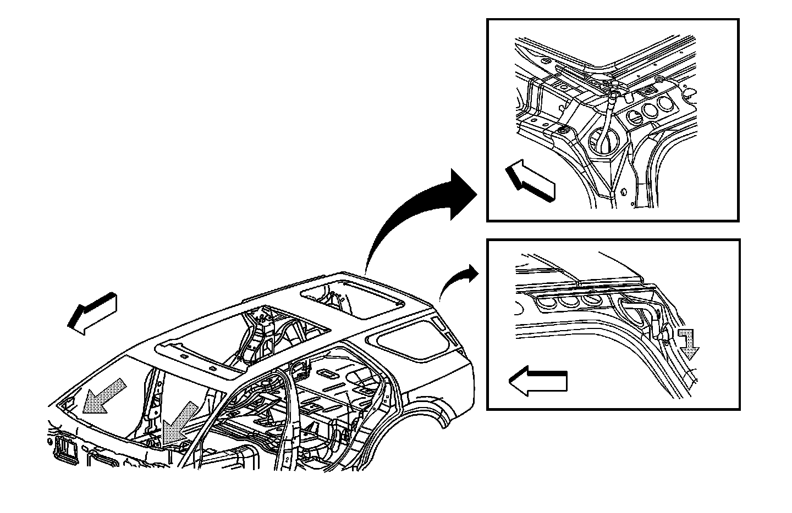

Water Management Description and Operation
Water Management Description and Operation
Ultra-View Sunroof Water Flow Direction

The Ultra-View sunroof drain channels are located on the right and left sides, and the front and rear of the sunroof module. The front half of the side channels and the front channel direct the water to the front of the windshield pillars to the air inlet panel, and out the underside of the vehicle.
The rear half of the side channels and the rear drain channel direct the water to the rear sunroof drain hoses routed down the D-pillar and out the lift gate gutter above the rear lamps.
To ensure that the water management system performs properly, ensure that the drain channels and the rear drains are clean and free from debris.
To clean the front side drain channels, perform the following steps:
1. Cover the interior.
2. Open the front sunroof to the full open position.
3. Apply 241 kPa (35 psi) of compressed air to clear any debris.
4. Flush with clear water.
To clean the rear sunroof drains, perform the following steps:
1. Open the rear sunroof to the vent position.
2. Apply 241 kPa (35 psi) of compressed air to clear any debris.
3. Flush with clear water.